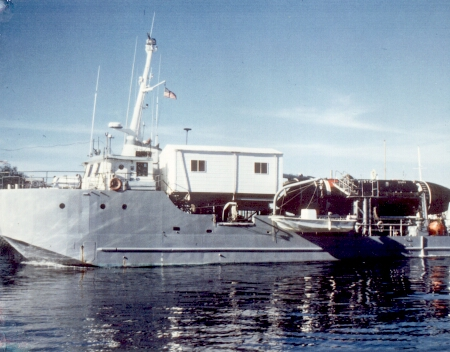
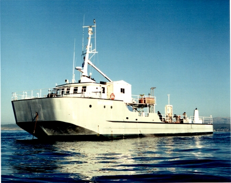
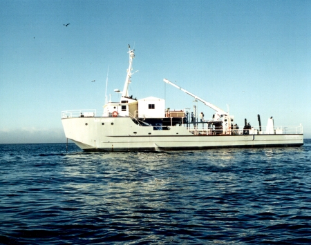
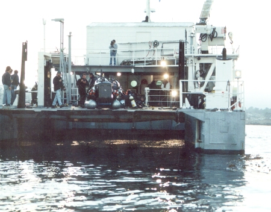
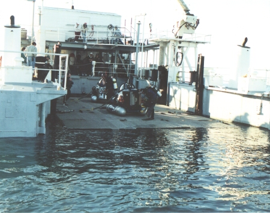
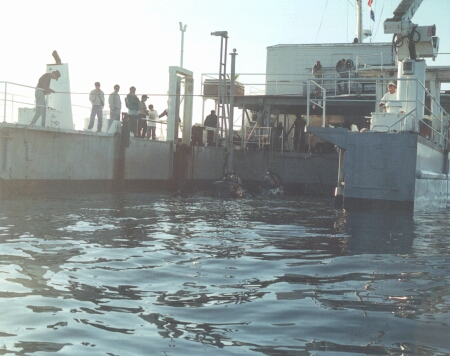

Photos of the Transquest at work


Transquest with "Mystic" (DSRV1)

Transquest in Monterey Bay

Transquest launching an observation boat
with the onboard crane

Two "Deep Worker" submersibles about to
be launched

Elevator at water level

Subs taking on ballast just before launch

Back to the Transquest Home Page
Web site developed by Sarah Rodger, Transquest Crew